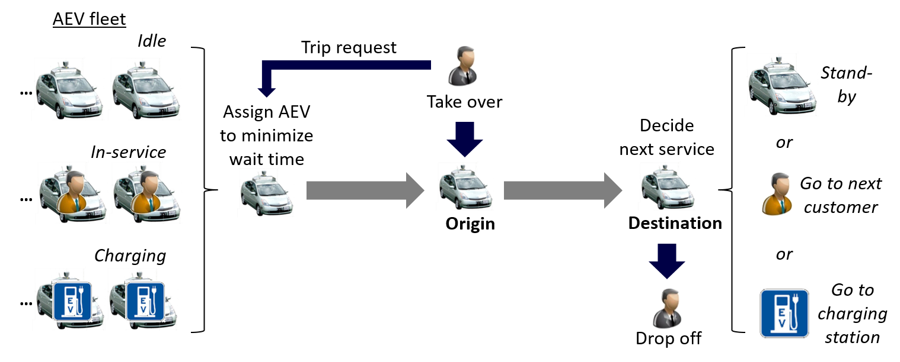
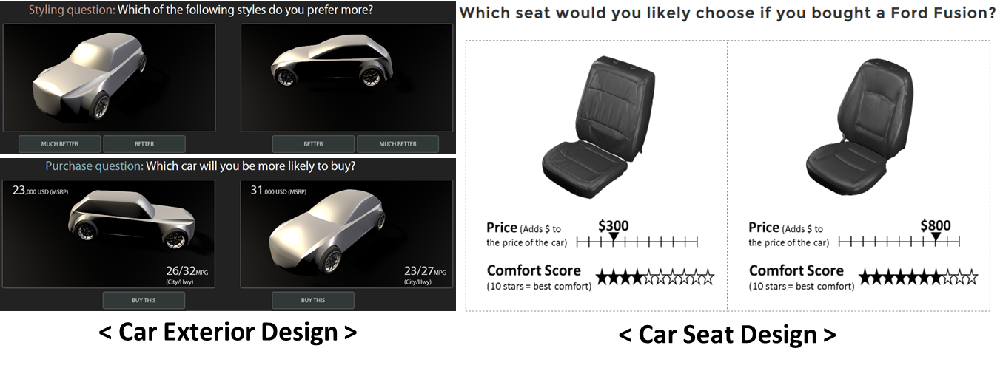
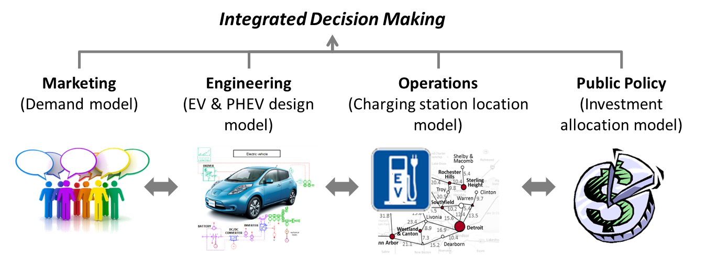
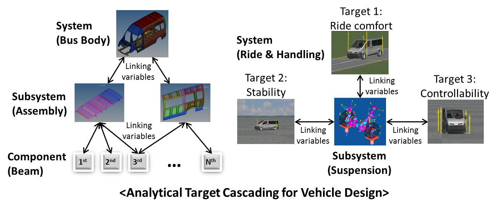

Reserch
Researchers
- Sangeun Oh, K-School, KAIST
- Changbae Cha, K-School, KAIST
- Jah Eun Chang, K-School, KAIST
- Sangwon Kim, K-School, KAIST
- SeonUk Song, K-School, KAIST
- Hyunho Park, Graduate School of Innovation & Technology Management, KAIST
- Sangyoon Oh, Mechanical Engineering, KAIST
- Sangwook Jeon, Chemistry, KAIST
- Youngsu Jung, Mechanical Engineering, KAIST (Co-advising with Prof. Ikjin Lee)
- Ungki Lee, Mechanical Engineering, KAIST (Co-advising with Prof. Ikjin Lee)
- Jimin Rhim, Graduate School of Culture & Technology, KAIST (Co-advising with Prof. Ji-Hyun Lee)
- Gi-bbeum Lee, Graduate School of Culture & Technology, KAIST (Co-advising with Prof. Ji-Hyun Lee)
Research Topics
[1] Autonomous Vehicle Sharing System Design
(i) Autonomous Taxi Service Design
When it comes to autonomous vehicles, most manufactures focus on the technological side and not on the design of how to provide the service. When traditional taxis are replaced by autonomous ones, there will be substantial behavioral changes by customers. The service providers will only succeed if they develop an optimal UI/UX design that adjust to these changes. This research develops a guideline of autonomous taxi service from the customers’ perspective, and further provides design requirements of autonomous vehicle development for manufacturers.
(ii) Sharing Economy of Autonomous Electric Vehicles
Car sharing services promise “green” transportation systems. Two vehicle technologies offer marketable, sustainable sharing: autonomous vehicles (AVs) eliminate customer requirements for car pick-up and return, and battery electric vehicles entail zero emissions. Designing an autonomous electric vehicle (AEV) fleet must account for (1) the relationships among fleet operations, (2) charging station (CS) operations, (3) electric powertrain performance, and (4) consumer demand. This research proposes a system design optimization framework integrating these four subsystem problems. This framework is used to examine AEV sharing system profitability and feasibility for a variety of market scenarios. The results provide practical insights for service system decision makers.
(iii) Ethical Decision Making in Autonomous Driving
This research addresses the following question: how can we integrate massive information provided by autonomous driving technology and ethical decision making process made by human drivers? We aim to model and analyze humans’ ethical decision making process, design an interface between autonomous driving technology and humans, and ultimately suggest an autonomous driving algorithm design that can make ethical decisions.

Supported by
Kakao Mobility, NRF (National Research Foundation of Korea), RED&B(KAIST), Dow Distinguished Award for Interdisciplinary Sustainability, MCube Grant
Related Works:
- Autonomous Electric Vehicle Sharing System Design, Journal of Mechanical Design, 2017. (PDF)
[2] Eliciting Consumer Preference by Machine Learning (Deep Learning)
(i) Eliciting Styling Preference on Vehicle Design
Although eliciting consumer preference is a core part in design, capturing preferences on form (styling) is still a challenge. In particular, we have been examining the trade-off between forms and functions in a vehicle. We elicit consumers’ preferences on product design using state-of-the-art Machine Learning and parameterized 3D vehicle shapes. This research estimates willingness-to-pay for specific design elements.
(ii) Forecasting Demand of Hybrid Trucks
The market for delivery services has grown substantially along with the development of e-commerce. In an effort to reduce pollution caused by delivery trucks due to low fuel efficiency and high emissions, the Korean government is considering converting the diesel-powered delivery trucks in the current market to hybrid trucks. The objective of this research is to predict truck drivers’ demand for converting to hybrid trucks depending on converting costs and increase in fuel efficiency by using Machine Learning.

Supported by
KOTI(The Korea Transport Institute), University of Michigan Transportation Research Institute(UMTRI), Rackham Graduate Student Research Grant
Related Works:
- Form + Function: Optimizing Aesthetic Product Design via Adaptive, Geometrized Preference Elicitation, Marketing Science (under review). (PDF)
(Online Experiment)
- Influence of Automobile Seat Form and Comfort Rating on Willingness to Pay, International Journal of Vehicle Design, 2017. (PDF)
[3] Electric Vehicle Design for Market Systems
We have been working on electric vehicle (EV) design problems by integrating electric powertrain simulation, charging station location network, consumer demand, and public policy models, into a large decision making framework. This research compares the public investment impacts on EV markets in China and US. In addition, We are exploring how to make design decisions today by taking future long-term design evolution into account under engineering and marketing uncertainties. We adopt real option theory used in Financial Engineering and RBDO (Reliability-Based Design Optimization) to hedge design risks and create smooth design transitions.

Supported by
Toyota Motor Corporation, Automotive Research Center (US Army), Graham Doctoral Fellowship
Related Works:
- Reliability-based Design Optimization (RBDO) for Electric Vehicle Market Systems, IDETC, 2017. (PDF)
- A Real Options Approach to Hybrid Electric Vehicle Architecture Design for Flexibility, Journal of Mechanical Design, (under review). (PDF)
- Public Investment and Electric Vehicle Design: A Model-based Market Analysis Framework with Application to a USA-China Comparison Study, Design Science, 2016. (PDF)
- An Integrated Design Approach for Evaluating the Effectiveness and Cost of a Fleet, Journal of Defense Modeling and Simulation, 2016. (PDF)
- Designing Profitable Joint Service-Product Channels, Journal of Services Marketing (under review). (PDF)
- Integrated Decision Making in Electric Vehicle and Charging Station Location Network Design, Journal of Mechanical Design, 2015. (PDF)
- A Framework for Enterprise-driven Product Service Systems Design, ICED, 2013. (PDF)
- Integrated Design Process of Conjoint Analysis and TRIZ, KSIME, 2009. (PDF)
- Integration of Marketing Domain and R&D Domain in NPD Design Process, Industrial Management & Data Systems, 2007. (PDF)
[4] Multidisciplinary Design Optimization
An engineering system problem (e.g., vehicle design) may not be solvable due to the size and complexity of models. Analytical Target Cascading (ATC) method has been developed to address this issue by partitioning a system into subsystems and coordinating them to meet a system goal. We have been designing commercial vehicle systems and hybrid vehicle architectures using ATC. However, we realized that ATC with parallel solving approach often fails to achieve convergence or involves high computational cost. Therefore, we research on robust convergence strategies for complex industrial applications that should be solved in parallel.

Supported by
Hyundai Motor Company, Altair University Fellowship
Related Works:
- Modified Augmented Lagrangian Coordination and Alternating Direction Method of Multipliers with Parallelization in Non-hierarchical Analytical Target Cascading, Structural and Multidisciplinary Optimization, 2017. (PDF)
- Decomposition Based Design Optimization of Hybrid Electric Powertrain Architectures: Simultaneous Configuration and Sizing Design, Journal of Mechanical Design, 2016. (PDF)
- Solving Multiobjective Optimization Problem Using Quasi-separable MDO Formulations and Analytical Target Cascading, Structural and Multidisciplinary Optimization, 2014. (PDF)
- Optimal Design of Commercial Vehicle Systems Using Analytical Target Cascading, Structural and Multidisciplinary Optimization, 2014. (PDF)
[5] Deep Learning Embedded Device for the Blind
Artificial Intelligence (AI) representing technologies of Industry 4.0 is expected to enhance everyday life. Especially as deep learning advances rapidly, enterprises focus on developing high-tech products using computer vision technology. This technology is particularly needed for those with visual impairment or vision loss. The general people may not feel much discomfort in life without this technology. However, computer vision technology is something that those with disabilities cannot go without. This research aims to empathize the discomfort of the visually impaired and develop low-priced and human centered devices by embedding deep learning to make the their lives better.
Supported by
K-School